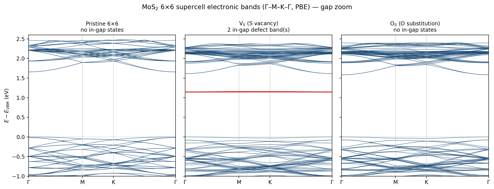
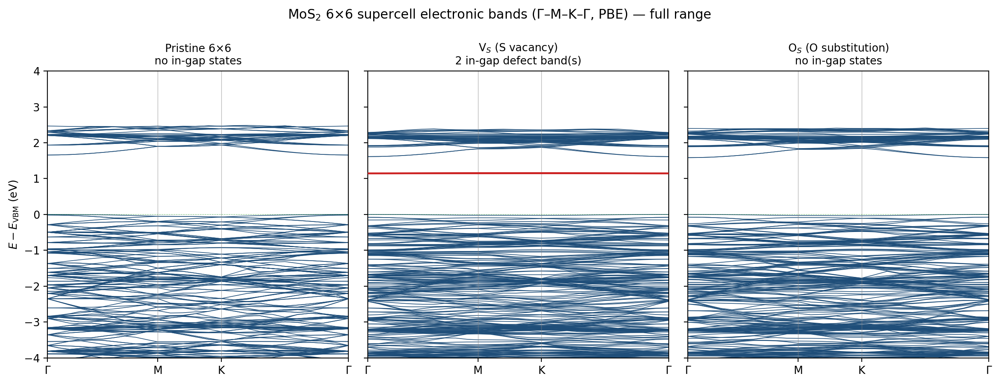
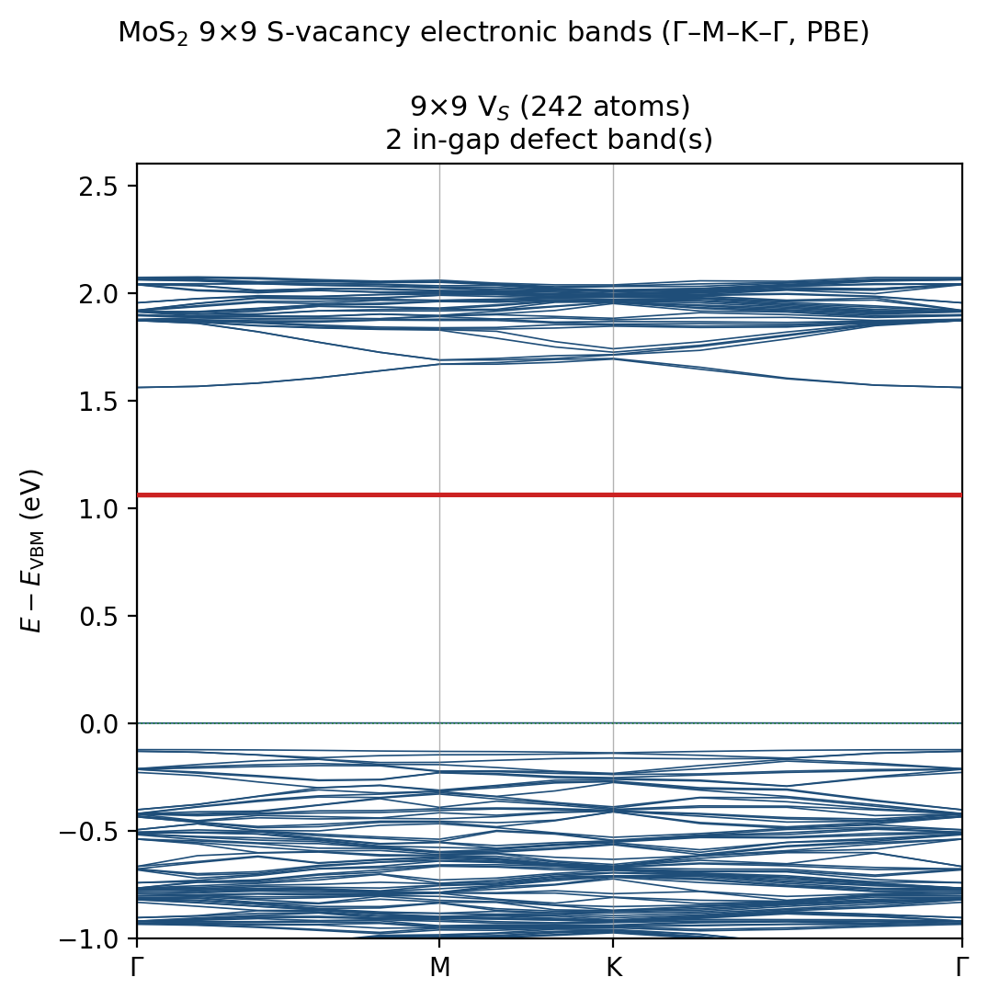

Contents
A companion electronic-structure comparison for the three systems whose phonon spectral functions are reported elsewhere on this site (pristine, V$_S$, O$_S$). Same $6\times6$ supercells, same relaxed geometries, same DFT settings (PBE, NC stringent pseudos, $E_{\rm cut}=100$ Ry, 2D Coulomb cutoff). Bands computed along $\Gamma$–M–K–$\Gamma$ on a deliberately coarse 26-$k$-point path (10/5/10/1 per segment) to keep the cost down — the supercell SCF was $\Gamma$-only, so this is a band-interpolation read-out, not a converged transport grid.
1. Gap-region comparison

The three panels are referenced to each system's valence-band maximum (VBM); the green dotted line marks $E_{\rm VBM}$, and isolated flat in-gap bands are drawn in red.
| System | PBE gap (eV) | In-gap defect states | Interpretation |
|---|---|---|---|
| Pristine | 1.66 | none | clean ~1.7 eV gap, as expected for monolayer MoS₂ (PBE) |
| V$_S$ | host gap ~1.7; defect band at +1.15 eV | two near-degenerate flat bands (width < 10 meV) ≈ 0.55 eV below the host CBM | the classic S-vacancy $e$ defect doublet — empty, deep in the gap, $C_{3v}$-derived; the corresponding $a_1$ level sits at/below the VBM |
| O$_S$ | 1.58 | none | O is isovalent with S (both group VI, 6 valence e⁻) → no deep gap state; only a mild perturbation that slightly narrows the gap |
This is the electronic counterpart of the phonon story: V$_S$ is the strong, level-introducing perturbation (deep $e$ states in the electronic gap; resonances + largest linewidths in the phonon spectrum), while O$_S$ is the gentle isovalent/isview substitution (no electronic gap state; but, because O is light and binds stiffly, it does eject phonon local modes above the vibrational spectrum — the mirror image of its electronic innocence).
2. Full-range view

±4 eV around the VBM. The valence manifold (Mo-$d$ / S-$p$) and conduction manifold are essentially common to all three; the defects act only near the gap.
3. Supercell-size convergence: V$_S$ at 9×9
To test how isolated the defect states really are, the S-vacancy was rerun in a 9×9 supercell (242 atoms) — 2.25× the area of the 6×6. This is a heavy calculation (2100 valence electrons, ~2×10⁶ plane waves); to keep it tractable it used an even sparser 13-$k$ $\Gamma$–M–K–$\Gamma$ path, a relaxed convergence threshold (conv_thr=1e-5, ample for a band plot), and an ideal (unrelaxed) vacancy geometry. Single-$k$ cost was ~1 h on 4 nodes; ~13 node-h total.

The same empty $e$ defect doublet appears, but the comparison with 6×6 is the point:
| 6×6 (107 atoms) | 9×9 (242 atoms) | |
|---|---|---|
| $e$ doublet position ($E-E_{\rm VBM}$) | 1.146 / 1.150 eV | 1.060 / 1.060 eV |
| $e$ doublet dispersion width | 2.7 / 9.1 meV | 0.7 / 0.9 meV |
Two clean trends as the cell grows:
- Dispersion collapses ~10× (≈9 → ≈0.9 meV): the residual band width is the defect–defect coupling between periodic images. At 9×9 the $e$ states are flat to <1 meV — essentially the isolated-defect limit. This is the direct electronic evidence that the dilute-limit assumption of the phonon T-matrix work (and of any single-defect level) is well justified by these supercell sizes.
- Level drops ~90 meV (1.15 → 1.06 eV above VBM) and the two bands become degenerate to the meV: image–image repulsion that pushed the level up at 6×6 is largely gone, so 1.06 eV is closer to the true isolated-vacancy $e$ level.
(Caveat: the 6×6 used the relaxed geometry and a denser 26-$k$ path, the 9×9 an ideal geometry and 13-$k$; the absolute positions therefore carry some method spread, but the order-of-magnitude dispersion narrowing is a robust size effect, not a settings artifact.)
4. Caveats
- $\Gamma$-only SCF charge density + Gaussian smearing (0.01 Ry): defect-level positions are qualitative, not the few-meV-converged values a dense-$k$ SCF + larger supercell would give. The presence/absence and symmetry character of the in-gap states are robust; their absolute energies are not.
- VBM reference uses the occupation-based highest filled state; with smearing this is approximate for the metallic-like defect cells.
- PBE underestimates the true gap (the ~1.7 eV here vs ~2.5 eV optical/quasiparticle) — fine for a relative comparison, not for absolute level alignment.
- The coarse 26-$k$ path can miss the exact band-edge $k$-points; it is meant for the gap-region overview, consistent with the user's "no dense $k$, keep the cost low" instruction.
Artifacts: /scratch/rjguo/vs_phonon/bands/{pristine,vs,os}/ (6×6, scf.out, bands.out, dout/*_b.xml), parser plot_bands.py; /scratch/rjguo/vs_phonon/bands9x9/vs/ (9×9, bands.out + plot_bands9.py). 6×6 runs ~4 node-h each on standard; the 9×9 bands ~13 node-h (4 nodes, 416 ranks, disk_io='none' to avoid buffering all $k$-point wavefunctions in RAM).